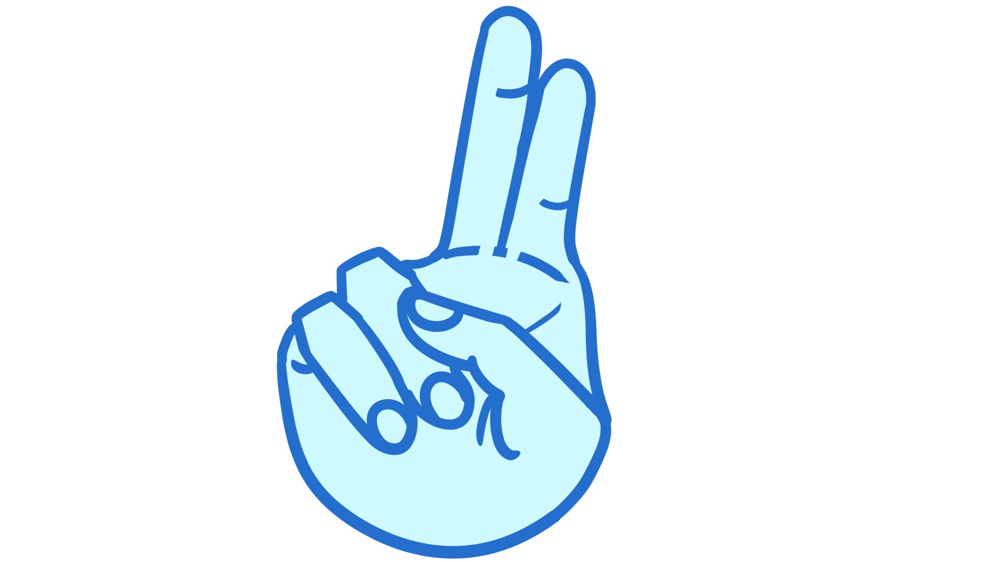

Estamos en la ultima vocal, la letra U. ¡Es muy fácil!
U

Con la mano cerrada, se estiran los dedos índice y medio unidos. La palma mira al frente.
Entendido
¡Bien hecho!
Ahora estás listo para aprender más letras.